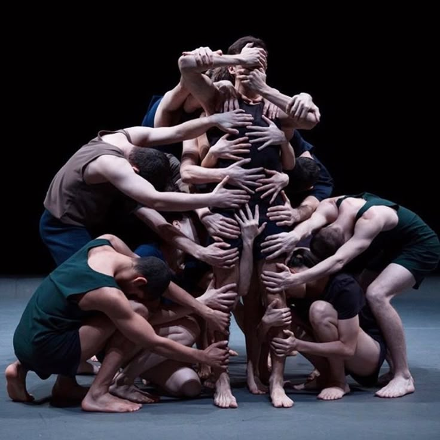

La danza es una forma artística universal que combina movimiento, ritmo y música, permitiendo a las personas expresar emociones y contar historias a través de su cuerpo. La danza es más que un arte; es un reflejo cultural, social y emocional que une a las personas en un lenguaje común de expresión.
Danzas folklóricas
Las danzas folklóricas representan las tradiciones y costumbres de un grupo específico. Estas danzas suelen ser interpretadas en celebraciones y festivales, y se caracterizan por su conexión con las historias y la historia del pueblo. Están llenas de ritmos vibrantes y movimientos que reflejan la vida cotidiana y las leyendas de la comunidad.
Danzas artísticas
Las danzas artísticas son aquellas que se presentan en un entorno formal, a menudo en teatros y espacios dedicados al arte. Estas danzas se enfocan en la técnica, la expresión y la narrativa, y pueden abarcar desde el ballet clásico hasta la danza moderna y contemporánea. Cada una tiene su propio estilo y metodología que busca impactar emocionalmente al público
Danza clásica y ballet
El ballet es una de las formas más reconocidas de la danza clásica. Surgió en las cortes italianas durante el Renacimiento y se desarrolló en Francia y Rusia. El ballet se caracteriza por su rigor técnico, su estética elegante y sus narrativas dramáticas. Utiliza una terminología específica y un conjunto de movimientos que han sido codificados a lo largo de los siglos
Danza contemporánea
La danza contemporánea es un estilo que desafía las convenciones del ballet tradicional. Se centra en la expresión individual y la exploración de nuevos movimientos. Este tipo de danza permite mayor libertad creativa, invitando a los bailarines a explorar su propio cuerpo y emociones. Además, la danza contemporánea incorpora diversas técnicas y estilos, fusionando elementos del jazz, la danza moderna y otras formas artísticas.